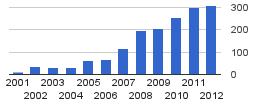

Number of OMNEST/OMNeT++ related publications each year (source: Google Scholar)
OMNeT++, the academic version of OMNEST has grown to be one of the most popular
simulation platforms for the research of various computer networks.
In recent years, the number of scientific publications written with OMNeT++ and OMNEST
has been well over two hundred each year, and this number keeps growing.
Below is a list of selected publications that you may find interesting.
Internet
{% include publication.html id="Munoz2010" %}
{% include publication.html id="Dreibholz2010" %}
{% include publication.html id="JGRodrigo2010" %}
{% include publication.html id="Baumgart2007" %}
Wired and Wireless LANs
{% include publication.html id="DHondt2011" %}
{% include publication.html id="ShuoFang2010" %}
{% include publication.html id="ZhiZhang2010" %}
{% include publication.html id="FengChen2008" %}
Mobile Ad-hoc Networks
{% include publication.html id="massin2010" %}
{% include publication.html id="kopke2008" %}
Sensor Networks
{% include publication.html id="JinGuo2011" %}
{% include publication.html id="PKumar2009" %}
{% include publication.html id="LCZhong2004" %}
Vehicular Networks
{% include publication.html id="Pandit2013" %}
{% include publication.html id="Baguena2013" %}
{% include publication.html id="Noori2013" %}
{% include publication.html id="Eiza2012" %}
{% include publication.html id="Ajaltouni2012" %}
{% include publication.html id="sommer2011bidirectionally" %}
In-vehicle Networks
{% include publication.html id="Buschmann2013" %}
{% include publication.html id="Steinbach2012" %}
{% include publication.html id="HyungTaek2011" %}
Cellular Networks
{% include publication.html id="draxler2012" %}
{% include publication.html id="klein2011" %}
{% include publication.html id="Alim2011" %}
{% include publication.html id="TYamada2009" %}
Satellite Communications
{% include publication.html id="Niehoefer2013" %}
{% include publication.html id="lewandowski2008" %}
{% include publication.html id="Boussemart2008" %}
Optical Networks
{% include publication.html id="Kim2011" %}
{% include publication.html id="Zhao2010" %}
Interconnection Networks
{% include publication.html id="Yebenes2013" %}
{% include publication.html id="Gran2011" %}
Networks-on-Chip (NoCs)
{% include publication.html id="BenItzhak2011" %}
{% include publication.html id="Hendry2009" %}
Cloud computing, HPC clusters, SANs
{% include publication.html id="birke2012" %}
{% include publication.html id="altevogt2011" %}
{% include publication.html id="denzel2010" %}
{% include publication.html id="gusat2009" %}
{% include publication.html id="minkenberg2009" %}